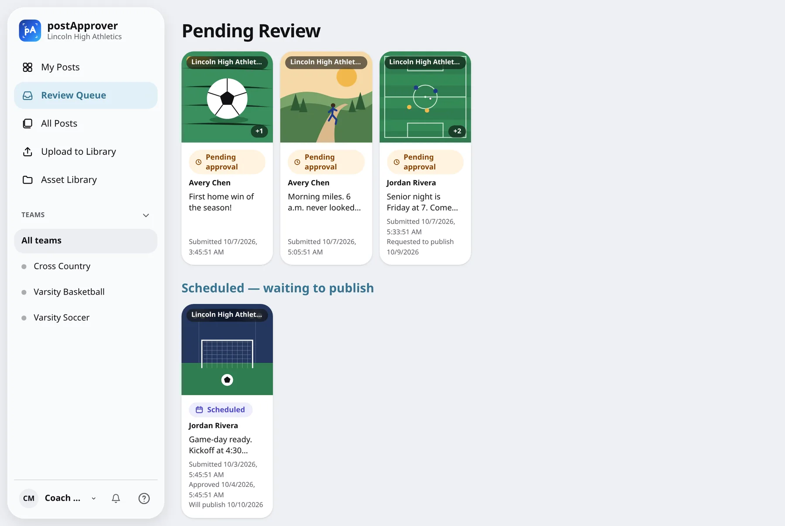
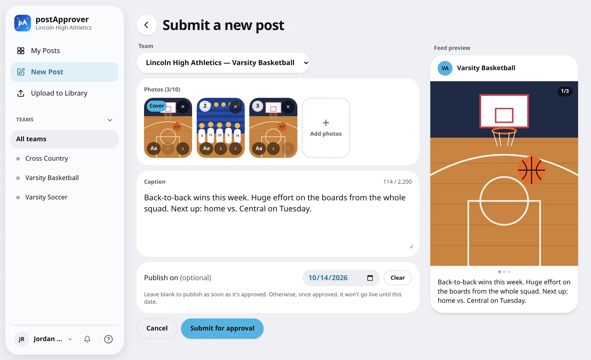
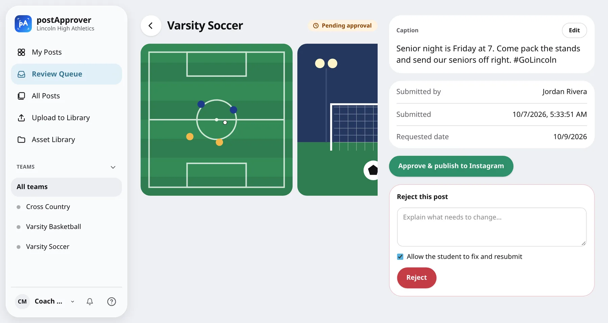
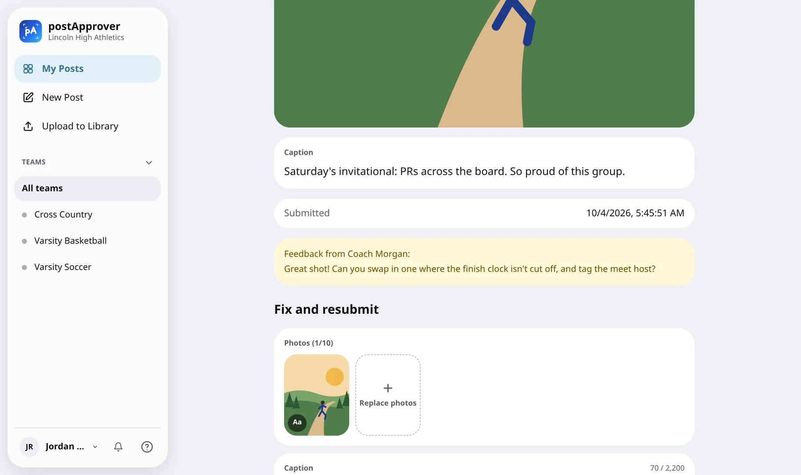
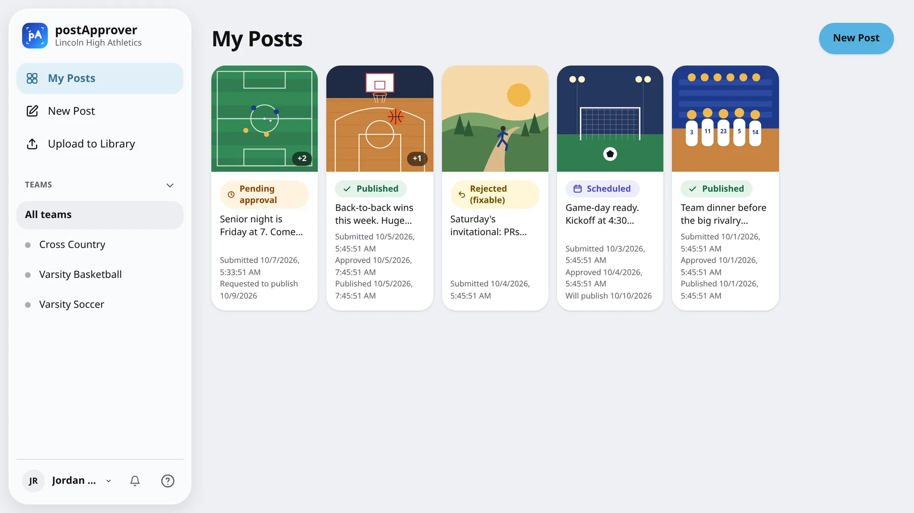
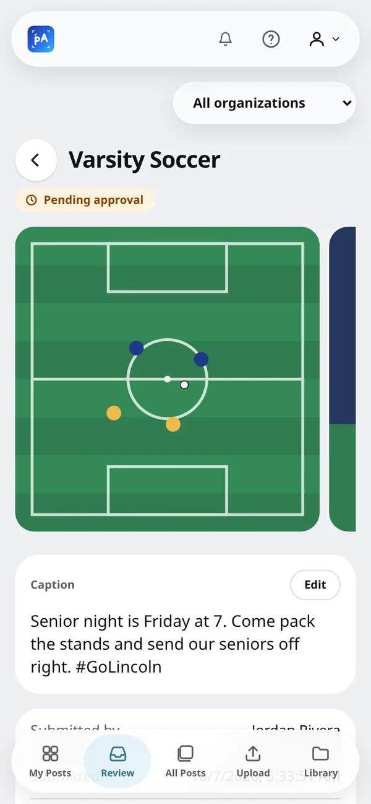
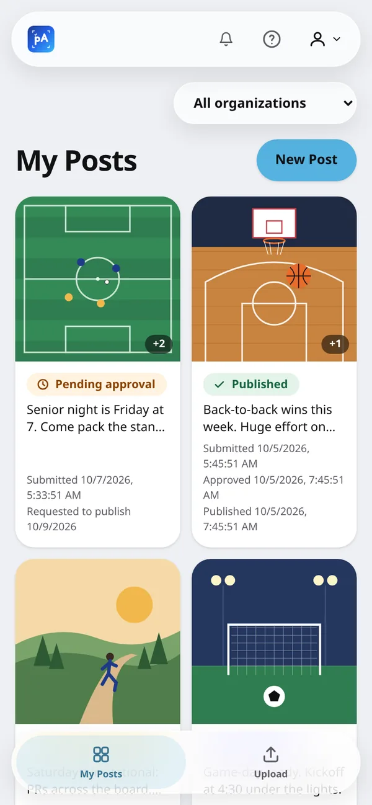

postApprover
Let students run their team's Instagram without handing them the password. A student submits photos and a caption, a coach reviews it from an email, and one click on Approve publishes the post to the team's account.

Why it exists
High school teams want their athletes posting game days, wins and team dinners, but the coach is the one responsible for what goes up. Sharing the account login means no review at all, and collecting photos by text message means the coach ends up doing the posting. postApprover puts a review step between the two.
- Review before anything goes live. Every approver for the team gets an email, and nothing is published until one of them approves it.
- Feedback, not just "no". A rejection carries a comment, and the coach chooses whether the student can fix it and resubmit.
- Many schools, many teams. One deployment hosts multiple schools, each team with its own Instagram account and approvers, and people can have different roles on different teams.
- Invite-only. Students sign in with their school Google account, and only after an admin invites them.
Features
Submit a post
Up to 10 photos in any order, published as a carousel, with a caption and a live preview of how it will look in the feed. Text can be added on top of a photo right in the browser, and an optional publish date holds the post until that day.

Approve or reject
The coach sees the photos, caption, who submitted it and any requested date. Approve publishes to Instagram straight away, or schedules it, and the student gets an email with the live link.

Fix and resubmit
A rejected post comes back to the student with the coach's note attached, ready to swap photos or rework the caption and send again.

Every post and its status
Students track each post from pending to scheduled to published. Coaches can also collect raw photos in a shared asset library, including from a public upload link with a QR code for parents and boosters, and turn any of them into a post.

On a phone
A tab bar on phones and a sidebar on larger screens, in light and dark mode, with push notifications when it's installed as a PWA.

